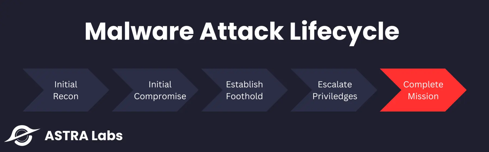
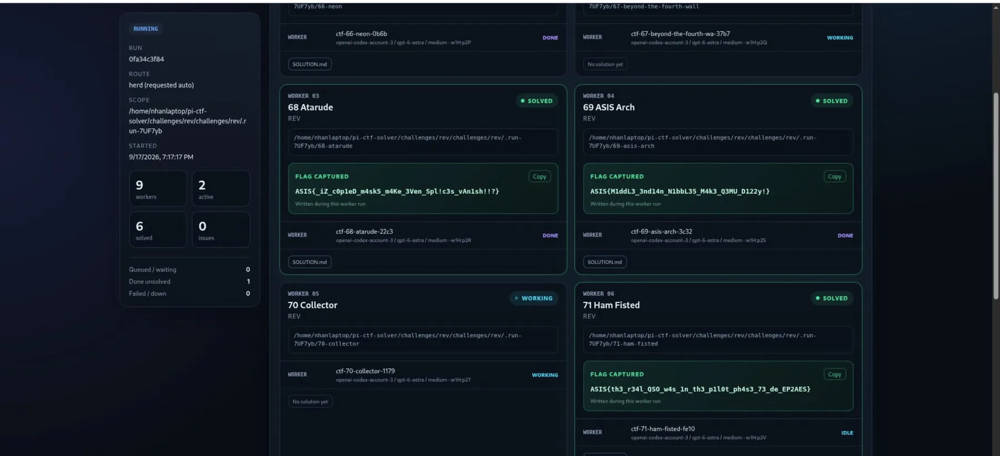
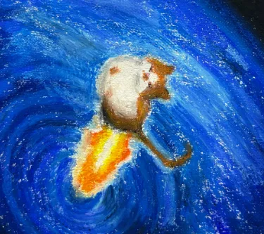
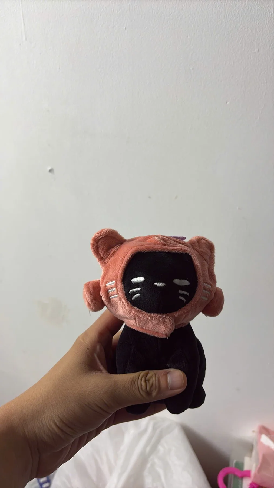
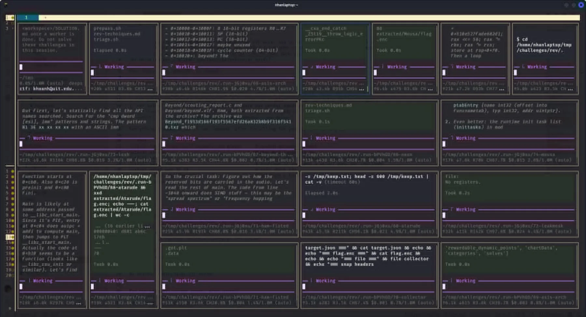

Malware for Beginners: Bộ nhớ, PE và shellcode
Năm phần: stack/heap và calling conventions; cấu trúc PE; Windows loader và DLL imports; shellcode qua PEB và Export Table; tổng quan malware và lab inject.

Nguyen Trong Nhan's notes on cryptography, CTF challenges and malware, written while figuring them out.
Long notes on cryptography, lattices and malware internals.
Read the learning notesCTF challenges, solved step by step.
Read the writeupsResearch prototypes and security tooling.
See the projectsTravel and personal logs between the work.
Read the life loglatest.log
Năm phần: stack/heap và calling conventions; cấu trúc PE; Windows loader và DLL imports; shellcode qua PEB và Export Table; tổng quan malware và lab inject.

One platform login, isolated challenge workspaces, and one worker agent per challenge, with a live dashboard and measured parallel gains.

CVP, LLL, Kannan
An evidence-driven agent architecture that inspects challenge artifacts, separates claims from observations, and verifies solutions before reporting.

What's new in the notebook? Browse the archivexin chào,
Nguyen Trong Nhan: cryptography, CTF, research
learning in public: every solved problem becomes a reusable note

exploring.txt
CTF cryptography, LWE / RLWE, FHE, PRNG state recovery, multi-agent systems, prompt & context engineering.
results.txt
I am an Information Security student in the UIT Honor Program, focused on cryptography, challenge-driven research, and reliable multi-agent systems. I am studying how agent systems can reason over real challenge artifacts without skipping evidence, while continuing hands-on work in classical and lattice cryptography. This is my public lab notebook.
The sky behind this page is procedural and drawn live with Three.js. One cloud of stars travels from a spiral galaxy to a ringed giant, a solar system, a lava world and an ocean planet. It is artistic, not an astronomical simulation.
Move through it and the stars you disturb turn into hex digits, then fade. With a mouse, press and hold to bend it. The button in the corner pauses it, and visitors who prefer reduced motion get a still sky. The Universe page has a calmer sky of its own.
profile.mp4
tag wall
in progress
